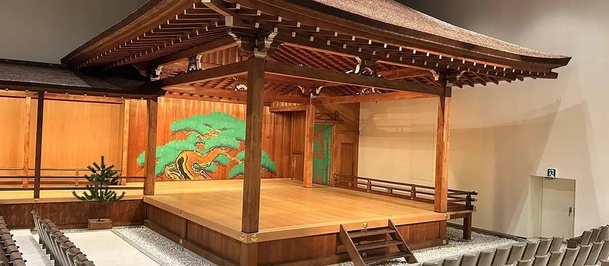
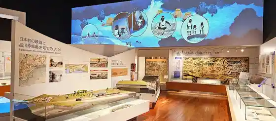
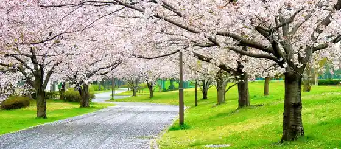
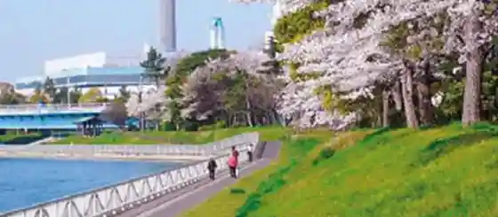

Shinagawa, Tokyo: things to do, food and stays
Shinagawa · Tokyo
Shinagawa
Highlighted on the Tokyo map.

Sights
The 14th Kita Roppeita Memorial Noh Theatre (Kita Noh Theatre)
Shinagawa Historical Museum

(Miyako) Oi Fu Tochu O Seaside Park

Keihin Unga Ryokudo Park

Shinagawa Tourism Ambassador Objet Photo Spot
Sugino Gakuen Isho Museum
Musashi-Koyama Shopping Street Palm
Oi Racecourse (Tokyo City Keiba)
Gotanda Cultural Center Planetarium
Shinagawa Shrine
Kume Museum of Art
Porisu Museum (Keisatsu Museum)
Kineka Omori
Shinagawa Aquarium
Dining
Homemade Ramen Muginawa
Homemade Ramen 麦苗

Noodle restaurant in Shinagawa, Tokyo.
Chuka Soba Tagano
中華そば 多賀野

Noodle restaurant in Shinagawa, Tokyo.
Shokudo Todaka
食堂とだか

Izakaya or bar in Shinagawa, Tokyo.
Chuka Soba Waka TOKYO
中華そば 和渦 TOKYO

Noodle restaurant in Shinagawa, Tokyo.
LES CACAOS Honten
レ・カカオ 本店

Sweets and bakery shop in Shinagawa, Tokyo.
Hot Spoon Gotanda ten
ホットスプーン 五反田店

Izakaya or bar in Shinagawa, Tokyo.
Chuka Soba Mukan
中華蕎麦 無冠

Noodle restaurant in Shinagawa, Tokyo.
patisserie de bon coeur Musashikoyama honten
パティスリィ ドゥ・ボン・クーフゥ 武蔵小山本店

Cafe in Shinagawa, Tokyo.
Oniyanma Gotanda honten
おにやんま 五反田本店

Noodle restaurant in Shinagawa, Tokyo.
Menichi Kiccho
麺壱 吉兆

Noodle restaurant in Shinagawa, Tokyo.
Yakiniku Shimizu Reservation
焼肉しみず

Meat restaurant in Shinagawa, Tokyo.
sign
麺屋 彩音

Noodle restaurant in Shinagawa, Tokyo.
Risutoranteino Rubero
リストランティーノ ルベロ

European restaurant in Shinagawa, Tokyo.
No Suta Honten
のスた 本店

Noodle restaurant in Shinagawa, Tokyo.
Nukitepa
ヌキテパ

European restaurant in Shinagawa, Tokyo.
La TRIPLETTA Reservation
ラ・トリプレッタ

European restaurant in Shinagawa, Tokyo.
Oicho Risshoku I Chuka Soba Iriko Ya
大井町 立食い中華蕎麦 いりこ屋

Noodle restaurant in Shinagawa, Tokyo.
Teuchi Seimen Hachimitsu
手打ち正麺 Hachimitsu

Noodle restaurant in Shinagawa, Tokyo.
TOUJOURS DEBUTER
トゥジュール デビュテ

Cafe in Shinagawa, Tokyo.
Hao Hao
好好

Chinese or Asian restaurant in Shinagawa, Tokyo.
Ramen Jiro Shinagawa ten
ラーメン二郎 品川店

Noodle restaurant in Shinagawa, Tokyo.
SPICECURRY KERAKU

Meat restaurant in Shinagawa, Tokyo.
Banraien
萬来園

Chinese or Asian restaurant in Shinagawa, Tokyo.
Yakiniku Koyo
焼肉・光陽

Meat restaurant in Shinagawa, Tokyo.
Togoshi Ginza Sushi Bando Reservation
戸越銀座 鮨 ばんど

Seafood restaurant in Shinagawa, Tokyo.
nerisa Reservation
nerisa

European restaurant in Shinagawa, Tokyo.
Pizzeria Bakka M'unica

European restaurant in Shinagawa, Tokyo.
Age Fuku
あげ福

Meat restaurant in Shinagawa, Tokyo.
Mochibuta Tonkatsu Taiyo
もち豚とんかつ たいよう

Meat restaurant in Shinagawa, Tokyo.
Ida Shoten
井田商店

Noodle restaurant in Shinagawa, Tokyo.
Pizzeria Vento e Mare
ベントエマーレ

European restaurant in Shinagawa, Tokyo.
AMAMERIA ESPRESSO
アマメリア エスプレッソ

Cafe in Shinagawa, Tokyo.
Maru Chuka Soba
丸 中華そば

Noodle restaurant in Shinagawa, Tokyo.
Niboshi Noodles Nibo Nibo Cino
煮干しNoodles Nibo Nibo Cino

Noodle restaurant in Shinagawa, Tokyo.
Kappo MAKINO
牧野

Izakaya or bar in Shinagawa, Tokyo.
Eiraku
永楽

Noodle restaurant in Shinagawa, Tokyo.
Stay
JR-East Hotel Mets Premier Gotanda
JR東日本ホテルメッツ プレミア 五反田

JR-East Hotel Mets Premier Gotanda is a hotel in Shinagawa, Tokyo.
Mitsui Garden Hotel Gotanda
三井ガーデンホテル五反田

Mitsui Garden Hotel Gotanda is a hotel in Shinagawa, Tokyo.
New Otani Inn Tokyo
ニューオータニイン東京

New Otani Inn Tokyo is an inn in Shinagawa, Tokyo.
Daiwa Roynet Hotel Tokyo Osaki
ダイワロイネットホテル東京大崎（2026年7月リニューアル）

Daiwa Roynet Hotel Tokyo Osaki is a hotel in Shinagawa, Tokyo.
Tokyo Marriott Hotel
東京マリオットホテル

Tokyo Marriott Hotel is a hotel in Shinagawa, Tokyo.
HOTEL METROPOLITAN OIMACHI TRACKS TOKYO
ホテルメトロポリタン 大井町トラックス

HOTEL METROPOLITAN OIMACHI TRACKS TOKYO is a hotel in Shinagawa, Tokyo.
LOISIR HOTEL SHINAGAWA SEASIDE
ロワジールホテル品川シーサイド

LOISIR HOTEL SHINAGAWA SEASIDE is a hotel in Shinagawa, Tokyo.
Wires Hotel Shinagawa Seaside
ワイヤーズホテル品川シーサイド

Wires Hotel Shinagawa Seaside is a hotel in Shinagawa, Tokyo.
Hearton Hotel Higashi Shinagawa
ハートンホテル東品川

Hearton Hotel Higashi Shinagawa is a hotel in Shinagawa, Tokyo.
APA Hotel Shinagawa Togoshi Ekimae (All Rooms Non-Smoking)
アパホテル〈品川 戸越駅前〉（全室禁煙）

APA Hotel Shinagawa Togoshi Ekimae (All Rooms Non-Smoking) is a hotel in Shinagawa, Tokyo.
JR West Group Via Inn Shinagawa Oimachi
JR西日本グループ ヴィアイン品川大井町

JR West Group Via Inn Shinagawa Oimachi is an inn in Shinagawa, Tokyo.
ANA Holiday Inn Tokyo Bay
ANAホリデイ・イン東京ベイ by IHG

ANA Holiday Inn Tokyo Bay is an inn in Shinagawa, Tokyo.